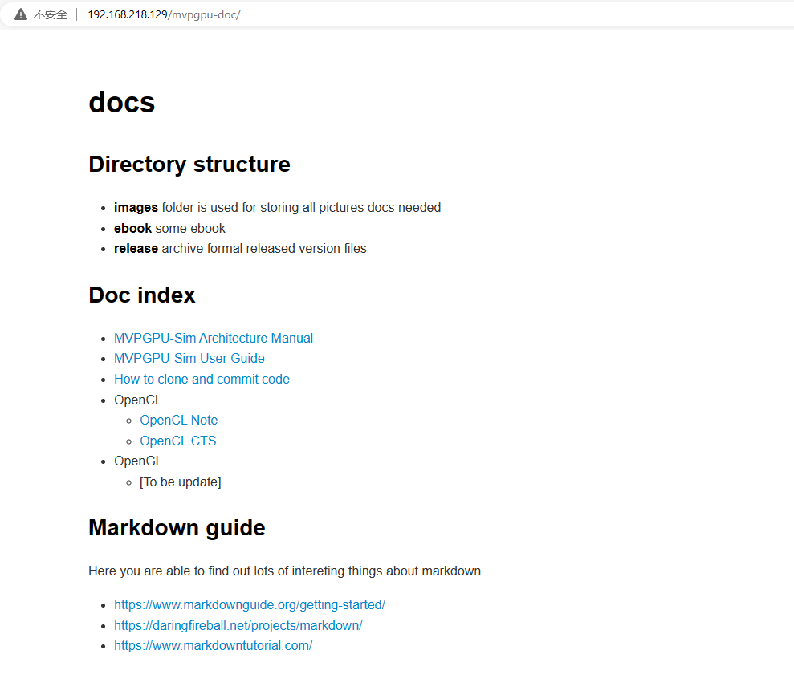

How to add a git repo in var/www/html
必须使用sudo权限
在 /var/www/html 目录下创建mvppgu-doc
创建后，进入mvpgpu-doc目录，进行git init初始化
git config –global –add safe.directory /var/www/html/mvpgpu-doc
git clone 192.168.218.129:/var/www/html/mvpgpu-doc 这里还是需要一个用户名，也就是服务器上需要提供一个用户名及密码，否则不能clone
PS D:\github_resourcce> git clone 192.168.218.129:/var/www/html/mvpgpu-doc Cloning into 'mvpgpu-doc'... ggangliu@192.168.218.129's password: remote: Enumerating objects: 3, done. remote: Counting objects: 100% (3/3), done. remote: Compressing objects: 100% (2/2), done. remote: Total 3 (delta 0), reused 0 (delta 0) Receiving objects: 100% (3/3), done. PS D:\github_resourcce>
目录下通过git上传index.html文件
PS D:\github_resourcce\mvpgpu-doc> ls 目录: D:\github_resourcce\mvpgpu-doc Mode LastWriteTime Length Name ---- ------------- ------ ---- -a---- 2023/4/6 11:15 21251 how_to_clone_and_commit_code.html -a---- 2023/4/6 11:15 15239 index.html -a---- 2023/4/17 10:46 1793 index.md登录网页效果如下图 